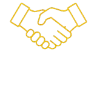

GBS centers offer fast careers, real exposure, and genuine breadth.
But nobody hands you a map how to succeed.
Join the club to amplify your career!
Most GBS professionals are talented, motivated, and stuck. Not because they lack ability — because nobody told them how the game works.

Your progress depends too much on who you work for
Whether you joined last month or lead a team of fifty — if you work in Global Business Services, Shared Services, or a Center of Excellence, this is for you.
GBS careers move along two axes — process expertise and leadership scope. Most roles sit on the diagonal. Some move sideways into specialist or project tracks. All paths are valid.
Role titles and band structures vary significantly across organizations. Some companies use 3-band structures (Junior / Senior / Lead), others use 6+ levels per category. This map shows typical progression patterns, not universal titles.
Click any role to explore skills and recommended pillars
The GBS Insider Club curriculum is built around 10 knowledge pillars — the core areas every GBS professional needs to master. Each pillar breaks down into clusters (groups of related skills), and each cluster contains individual topics with frameworks, real-world examples, and practitioner insights.
These ten pillars are not a random library. They follow the arc of a GBS career: understand how the center works, run the work well, grow yourself, then lead and drive change. New to GBS? Start at Pillar 1. Already in a role? Go straight to the stage that fits where you are now.


Performance gets you considered. Visibility gets you chosen. Most people focus entirely on the wrong one.
Wrong. The GBS professionals who understand the model build some of the most transferable careers in finance and operations.
This is not fair. It is also true. Here is what you can do about it.
Timing, framing, and evidence. Three things most people get wrong. Covered in Pillar 6.
Being excellent at your role is the floor, not the ceiling. What happens above that floor determines where you go.
The professional who asks "why does this exist?" and follows through builds credibility faster than anyone around them.
Structured content. No fluff. Built around how GBS professionals actually work and learn.
Create a free account in under 60 seconds. No credit card. Access foundational content across all 10 pillars immediately.
Work through pillars in sequence for structured progression — or jump straight to the topic most relevant to your current situation.
YouTube videos for every topic. Written guides with frameworks and checklists. Templates you can use in your actual job tomorrow.
Follow the career map. Identify your gaps. Get new content every week. Free members get the core curriculum. Members get everything.
Free access. No credit card. Cancel anytime. The only thing required is the decision to invest in yourself.
Already a member? Access the Field Guide → · Career Paths →